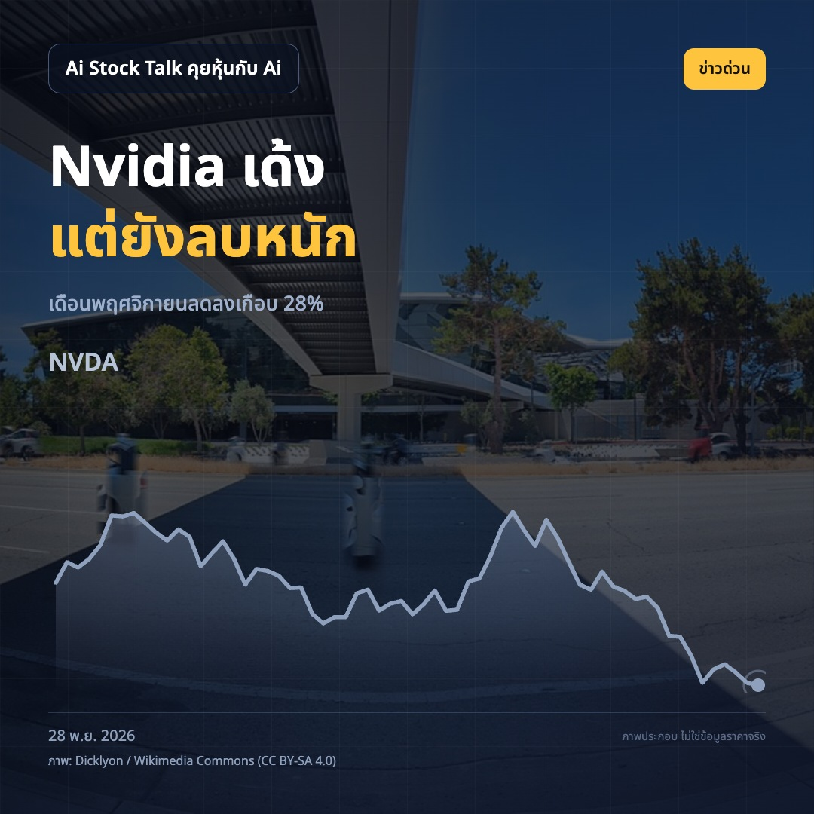
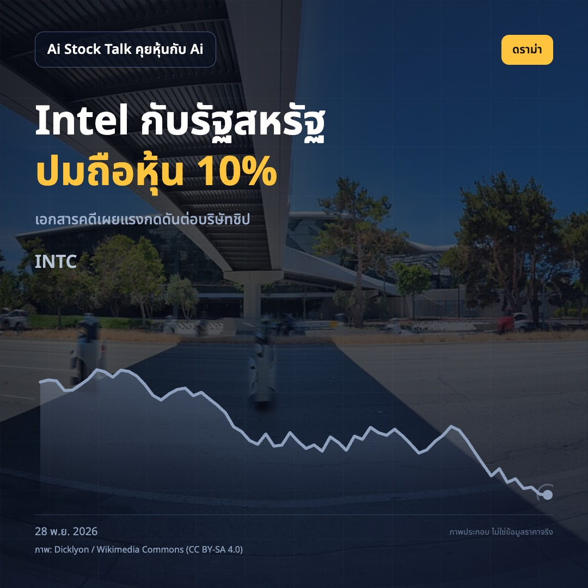
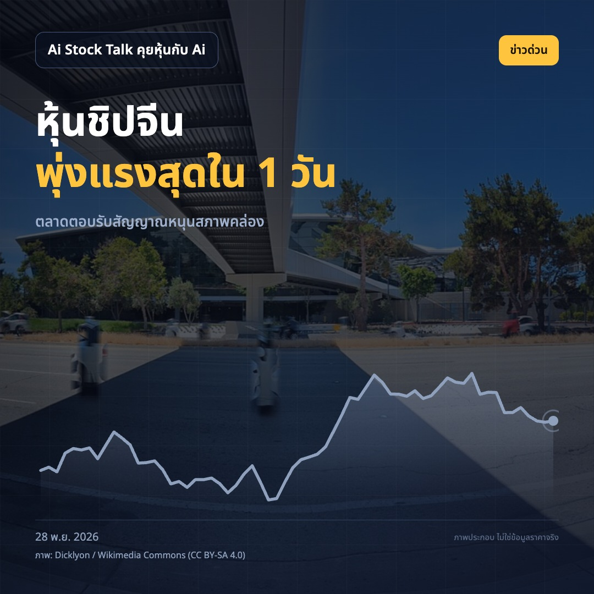
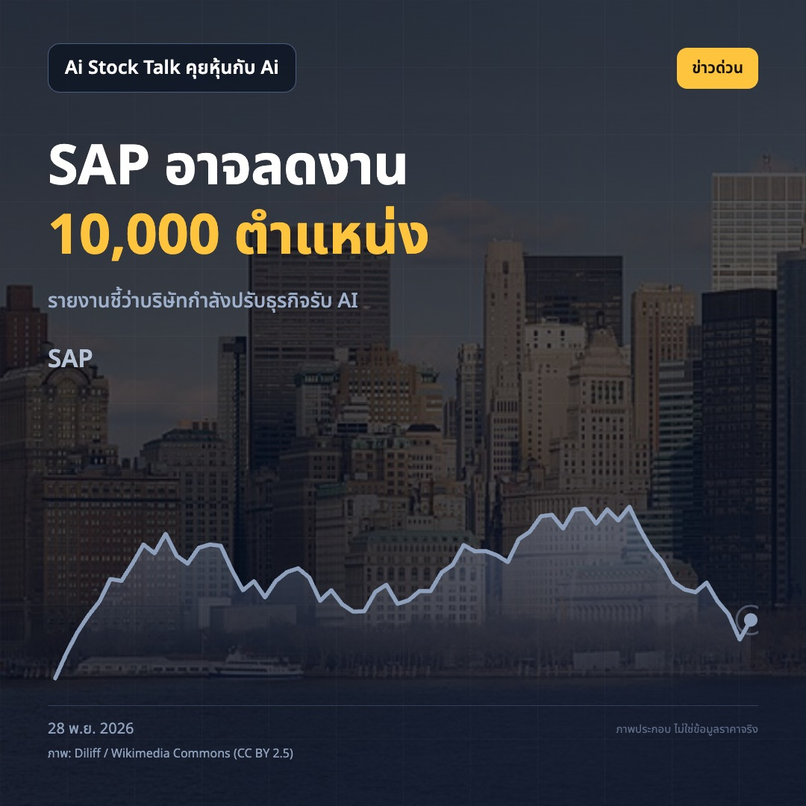
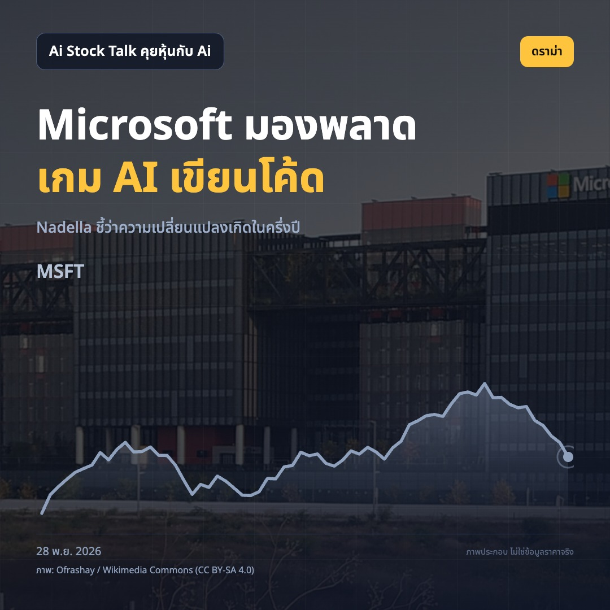
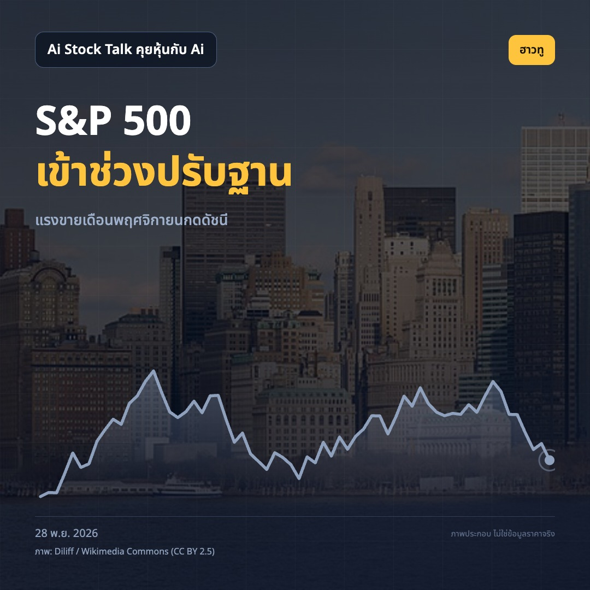

1. หุ้น Nvidia เด้ง แต่ยังติดลบหนัก

Nvidia เด้งในสัปดาห์นี้ แต่เดือนพฤศจิกายนยังลบเกือบ 28%
หุ้น Nvidia ปรับขึ้นในสัปดาห์ที่ Jensen Huang กลับมาเป็นข่าว แต่ภาพใหญ่ยังไม่ฟื้น: หุ้นยังลดลงเกือบ 28% ในเดือนพฤศจิกายน และลดลง 21% นับจากต้นปี 2026
การเด้งระยะสั้นจึงยังไม่ลบคำถามของนักลงทุนเรื่องความยั่งยืนของกระแส AI ซึ่งเป็นแรงกดดันต่อหุ้นกลุ่มนี้ในช่วงที่ผ่านมา
ทำไมต้องสน: ถ้าพอร์ตถือหุ้น AI อยู่ การเห็นหุ้นเด้งวันหรือสองวันอาจยังไม่พอจะบอกว่าความกังวลของตลาดจบแล้ว ควรดูภาพรวมของพอร์ตควบคู่กัน
คุณมองการเด้งของ Nvidia รอบนี้เป็นจุดเริ่มต้นของการฟื้นตัวหรือยัง?
ที่มา: https://www.marketwatch.com/story/these-stocks-soared-the-most-during-a-wild-week-highlighted-by-huangs-return-to-nvidia-578b3f9a?mod=mw_rss_topstories https://www.cnbc.com/2026/11/27/tech-download-jensen-huang-ai-market.html
Nvidia #หุ้นAI #ลงทุนหุ้นสหรัฐ
ภาพ: Dicklyon / Wikimedia Commons (CC BY-SA 4.0)
2. เอกสารคดีเผยแรงกดดันต่อ Intel

Intel ถูกกดดันให้รัฐบาลสหรัฐถือหุ้น 10%
รายงานที่อ้างเอกสารภายในจากคดีในศาลระบุว่า เจ้าหน้าที่รัฐบาลทรัมป์แจ้ง Intel ให้ยอมรับเงื่อนไขที่รัฐบาลสหรัฐจะได้หุ้นในบริษัท พร้อมกดดันให้ตัดสินใจ
บันทึกจากการพูดคุยกับฝ่ายการเงินของ Intel ระบุด้วยว่า คณะกรรมการบริษัทเลือกปฏิเสธได้ แต่เจ้าหน้าที่เตือนถึงผลที่จะตามมา รายละเอียดนี้ทำให้เรื่องการสนับสนุนอุตสาหกรรมชิปกลายเป็นประเด็นด้านอำนาจต่อรองด้วย
ทำไมต้องสน: สำหรับคนถือหุ้นชิป ความเสี่ยงไม่ได้อยู่ที่ยอดขายหรือเทคโนโลยีอย่างเดียว นโยบายรัฐอาจกระทบเงื่อนไขที่บริษัทต้องยอมรับ และตลาดอาจต้องประเมินผลต่อผู้ถือหุ้นใหม่
คุณคิดว่าการให้รัฐถือหุ้นช่วยหรือเพิ่มความเสี่ยงให้ Intel?
ที่มา: https://arstechnica.com/tech-policy/2026/11/intel-faced-a-choice-give-trump-10-or-face-the-consequences/
Intel #หุ้นชิป #เทคโนโลยี
ภาพ: Dicklyon / Wikimedia Commons (CC BY-SA 4.0)
3. หุ้นชิปจีนพุ่งแรงในวันเดียว

หุ้นชิปจีนทำสถิติขึ้นแรงสุดใน 1 วัน
หุ้นกลุ่มชิปในจีนปรับขึ้นแรงที่สุดเป็นประวัติการณ์สำหรับการซื้อขายวันเดียว หลังสื่อของรัฐเผยท่าทีของผู้กำหนดนโยบายระดับสูงระหว่างวัน
สารสำคัญคือคำมั่นว่าจะสนับสนุนสภาพคล่องในตลาดหุ้นจีน ซึ่งช่วยหนุนความเชื่อมั่นและทำให้ตลาดดีดกลับอย่างรวดเร็ว ข่าวนี้สะท้อนว่าหุ้นชิปยังตอบสนองไวต่อสัญญาณจากภาครัฐ
ทำไมต้องสน: คนไทยที่ลงทุนในกองทุนจีนหรือหุ้นเทคจีนอาจเห็นพอร์ตแกว่งตามข่าวนโยบาย แม้ข่าวนี้ยังไม่ได้บอกว่ากำลังผลิตชิปหรือผลประกอบการของบริษัทเปลี่ยนไปแล้ว
คุณให้น้ำหนักกับสัญญาณหนุนตลาดจากรัฐบาลจีนมากแค่ไหน?
ที่มา: https://www.cnbc.com/2026/11/27/china-chip-stocks-beijing-market-support.html
หุ้นชิปจีน #ตลาดหุ้นจีน #กองทุนจีน
ภาพ: Dicklyon / Wikimedia Commons (CC BY-SA 4.0)
4. SAP ถูกระบุว่าอาจลดงานครั้งใหญ่

SAP อาจลดงาน 10,000 ตำแหน่งระหว่างปรับธุรกิจรับ AI
รายงานระบุว่าบริษัทซอฟต์แวร์เยอรมัน SAP กำลังพิจารณาลดพนักงาน 10,000 ตำแหน่ง ขณะปรับธุรกิจซอฟต์แวร์ให้มุ่งไปทาง AI มากขึ้น
ตัวเลขนี้ยังเป็นแผนที่มีรายงานว่ากำลังพิจารณา ไม่ใช่ประกาศว่าลดงานเสร็จแล้ว แต่ก็แสดงให้เห็นว่าการเปลี่ยนผ่านสู่ AI อาจมาพร้อมการเปลี่ยนโครงสร้างคนทำงานครั้งใหญ่
ทำไมต้องสน: คนถือหุ้นซอฟต์แวร์ควรจับตาว่าการลดต้นทุนและการลงทุนด้าน AI จะส่งผลต่อธุรกิจจริงอย่างไร ข่าวการลดงานเพียงอย่างเดียวยังตอบไม่ได้ว่ารายได้หรือกำไรจะดีขึ้น
คุณมองการปรับองค์กรเพื่อ AI ครั้งนี้เป็นโอกาสหรือความเสี่ยงของ SAP?
ที่มา: https://www.cnbc.com/2026/11/27/sap-job-cuts-ai-restructuring.html
SAP #หุ้นเทค #AI
ภาพ: Diliff / Wikimedia Commons (CC BY 2.5)
5. Microsoft ยอมรับว่ามองเกม AI เขียนโค้ดพลาด

แค่ 6 เดือน เกมเครื่องมือเขียนโค้ดก็เปลี่ยนจน Microsoft มองพลาด
Satya Nadella ยอมรับว่า Microsoft มองข้ามการเติบโตของเครื่องมือ AI ช่วยเขียนโค้ดอย่าง Cursor และ Claude Code ทั้งที่เครื่องมือสำหรับนักพัฒนาเป็นธุรกิจที่บริษัทคุ้นเคยมานาน
เขาพูดถึงความเปลี่ยนแปลงที่เกิดขึ้นภายในเวลาเพียงครึ่งปี ซึ่งทำให้บทบาทของโปรแกรมสำหรับเขียนโค้ดแบบเดิมถูกตั้งคำถาม แม้ Microsoft จะมีทั้ง VS Code และ GitHub Copilot อยู่แล้ว
ทำไมต้องสน: สำหรับคนถือหุ้นเทค การมีฐานผู้ใช้เดิมไม่ได้รับประกันว่าจะเป็นผู้นำในวิธีทำงานแบบใหม่ ตลาดจะจับตาว่า Microsoft ปรับสินค้าได้เร็วแค่ไหนเมื่อคู่แข่งเปลี่ยนพฤติกรรมนักพัฒนา
คุณยังใช้โปรแกรมเขียนโค้ดแบบเดิมเป็นหลักอยู่ไหม?
ที่มา: https://www.blognone.com/node/152267
Microsoft #ClaudeCode #หุ้นเทค
ภาพ: Ofrashay / Wikimedia Commons (CC BY-SA 4.0)
6. S&P 500 ปรับฐาน นักลงทุนควรอ่านสัญญาณอย่างไร

S&P 500 เข้าช่วงปรับฐาน หลังแรงขายเดือนพฤศจิกายน
การขายหุ้นในเดือนพฤศจิกายนกดดัชนี S&P 500 เข้าสู่ภาวะปรับฐานแล้ว แต่ข้อมูลย้อนหลังที่รายงานยกมาชี้ว่า การปรับฐานไม่ได้ตามด้วยตลาดหมีหรือเศรษฐกิจถดถอยทุกครั้ง
สำหรับคนไทยที่ถือกองทุนหุ้นสหรัฐ นี่เป็นข่าวที่กระทบภาพรวมพอร์ตได้มากกว่าความเคลื่อนไหวของหุ้นรายตัว การเห็นดัชนีลงแรงจึงควรพิจารณาควบคู่กับสัดส่วนหุ้นสหรัฐที่ถืออยู่และระยะเวลาที่ตั้งใจลงทุน
ทำไมต้องสน: คำว่า “ปรับฐาน” บอกสิ่งที่เกิดขึ้นกับตลาดแล้ว แต่ยังไม่ได้บอกผลลัพธ์ถัดไป การตัดสินใจจากคำนี้คำเดียวอาจทำให้ประเมินความเสี่ยงในพอร์ตผิด
คุณดูอะไรเป็นหลักเมื่อกองทุนหุ้นสหรัฐในพอร์ตปรับลง?
ที่มา: https://www.cnbc.com/2026/11/27/the-sp-500-is-in-a-correction-bear-markets-and-recessions-dont-always-follow.html
SP500 #หุ้นสหรัฐ #กองทุนรวม
ภาพ: Diliff / Wikimedia Commons (CC BY 2.5)